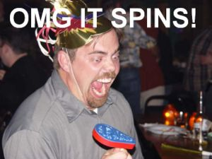

OMG
 De: La Frikipedia, la enciclopedia extremadamente seria.
De: La Frikipedia, la enciclopedia extremadamente seria.
 Esta es la cara que debes poner cada que dices OMG
Mucha gente usa esta expresión: OMG o OMFG. La mayoría no sabe lo que es, hoy lo descubriremos.
¿Qué es?
OMG pertenece al grupo de las Sigloemoticonas.
Al igual que todos los elementos de esto grupo, se puede considerar emoticono, palabra, sigla o una forma más de expresión como el código Morse.
Significado
- OMG: Oh My God. (¡Oh mi vaso! (del catalan))
- OMFG: Oh my fucking god/Oh my fucking godness. (¡Oh, mi jodido dios!)
- OMFGMFSM: Oh my fucking great master flying Spaghetti Monster!! Dios (¡oh mi jodido gran maestro Monstruo Espageti Volador!)
Modos de uso
Esto es más sencillo que el mecanismo de un chupete! ¿Cómo y cuando usar el OMG o OMFG?
- Cuando algo te haga muuucha gracia...
- Cuando algo te sorprenda. (Sí como WTF)
- Cuando descargues videos porno por "accidente".
- Cuando tú aparezcas en ellos.
- Cuando te aburras y lo pongas en el Mésenller.
- Cuando te despiertes por la mañana y veas a la novia de tu mejor amigo a tu lado.
- Cuando tu mejor amigo se despierte por la mañana y vea a tú novia a su lado.
- Cuando descubras que secretamente eres homosexual.
- Cuando algun amigo te cuente algo nulo y/o q no te sorprende, pero para no hacerle sentir mal dices "OMG!" .
- Cuando ha pasado un accidente de vida o muerte, y tú ni te enteras, entonces, para no parecer el único gilipollas en el lugar dices OMG!!! o también OMFG!!! (No confundir con WTF)
- Cuando eres un puto niño rata y te cabreas cuando te matan (en juegos de rol, acción, etc. Multijugador en general).
- Cuando te cabreas tú porque te ha tocado jugar con un niño rata y se te pone chulo.
- Cuando coges un anuncio de striptease y ves la cara de tu madre en él.
Ejemplos
- ¡Y llamaré a mi Perro PERRO!
OOOMGG... XDDDDD!
- ¿Sabías que ésta vida no es más que un sueño de lo que es la vida real (sacado de Matrix)
OMG O_O, o lol !
- O dices omG o te mato!
- OMG!!
- PUM
- Te dije omG, no OMG!
- LOL
- Lo diré porque
soy un gilipollas salido de un centro psiquiátrico quiero: OMFG
- un ejemplo es omg en valenciano se traduce oh el meu got de llet! :)
- OMG 3vs1 n00b go to play Tetris.
OMFGG!!! WTF?
Autor(es):
- Nexo
- MURO DE AGUAS
- Aku
- Aque
- Sacro9999
- Alex2610
- El Sevillano
- Tyelkanor
- Hinko
- Blanketa92
Frikipedia 2005-2016, Licencia
GFDL 1.2 - Extraído por FrikiLeaks